Barrio La Santa Cruz
“Aprender a Mirar la Salud”
“La salud no la elige quien quiere, sino quien puede.”— Joan Benach & Carles Muntaner
“Aprender a Mirar la Salud” (Benach & Muntaner)
Cómo la desigualdad social se incorpora biológicamente en los cuerpos.
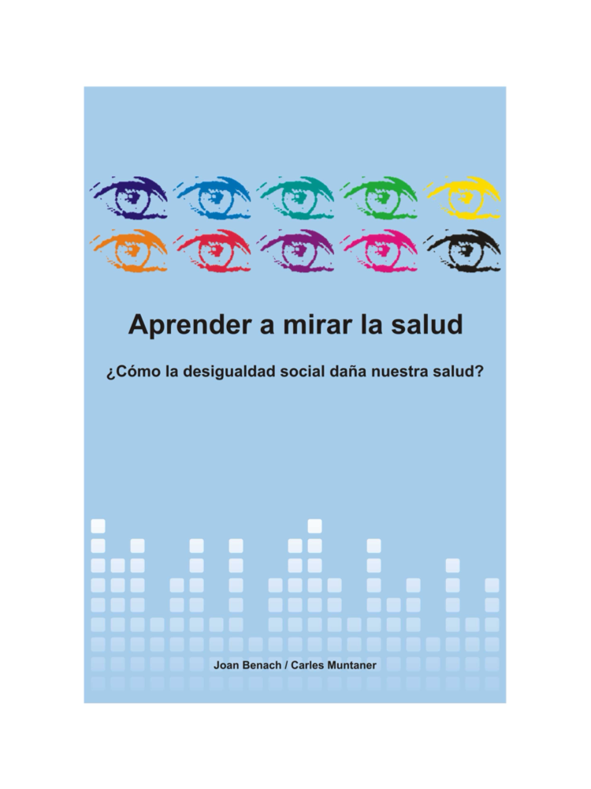
4 Claves para Mirar
- Ver vs. Mirar: Mirar con sensibilidad y razón crítica.
- Inequidad: Brechas innecesarias, evitables e injustas.
- Cifras con rostro: Enferman las poblaciones, no solo individuos.
- No culpar a la víctima: El salario y el barrio condicionan la vida.
1. Enormes • 2. Graduales • 3. Crecientes • 4. Adaptativas (Ley Inversa de Atención) • 5. Históricas (“La política es medicina a gran escala”).
🎥 Joan Benach: Desigualdad y Salud
Ubicación en Medellín, Valle de Aburrá e Itagüí
📍 Barrio La Santa Cruz
Costado suroriental de la Comuna 1 de Itagüí, a 15 min del centro de Medellín.
- Occidente: Autopista Sur (Cra. 42).
- Oriente: Río Medellín y Línea A del Metro.
- Norte: Antiguo Filtro de Coltejer y Zona Industrial.
- Sur: Nodo Mayorca, Envigado y Sabaneta.
Un Enclave Popular “Encajonado”
🚛 Oeste: Autopista Sur
Corredor nacional de carga pesada conectado a las Cras. 40 y 41.
🚆 Este: Metro y Río
Colinda con el río Medellín y la Estación Itagüí del Metro.
🏭 Norte: Filtro Coltejer
Adosado a las Zonas Industriales 1 y 2 y antiguos predios textiles.
🛍️ Sur: Nodo Mayorca
Triple frontera municipal: Itagüí, Envigado y Sabaneta.
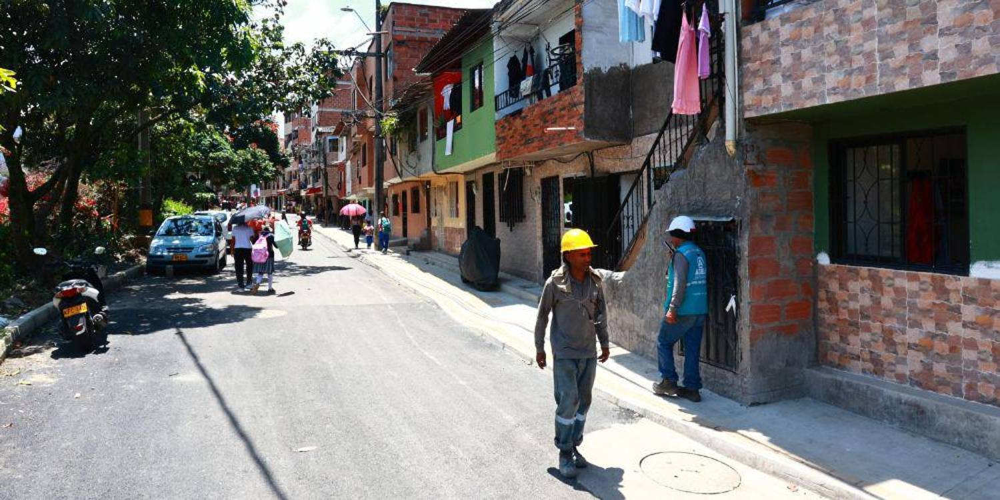
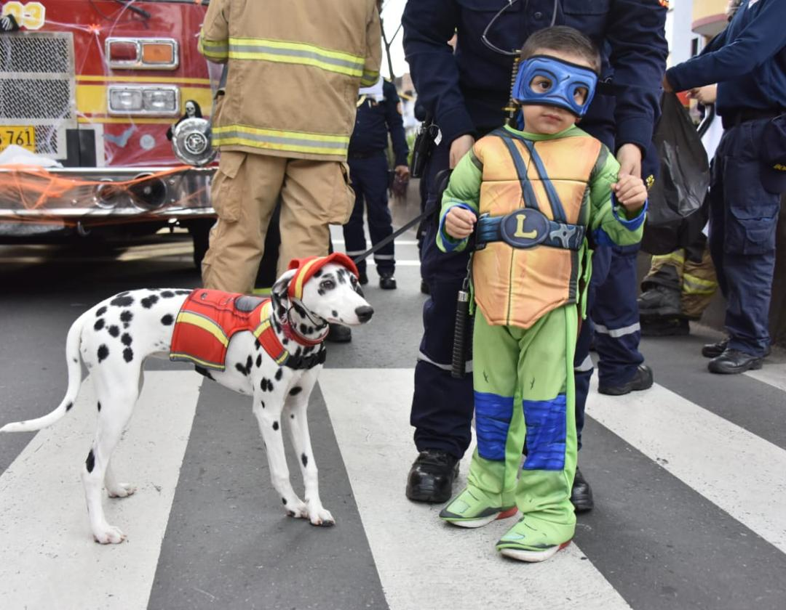
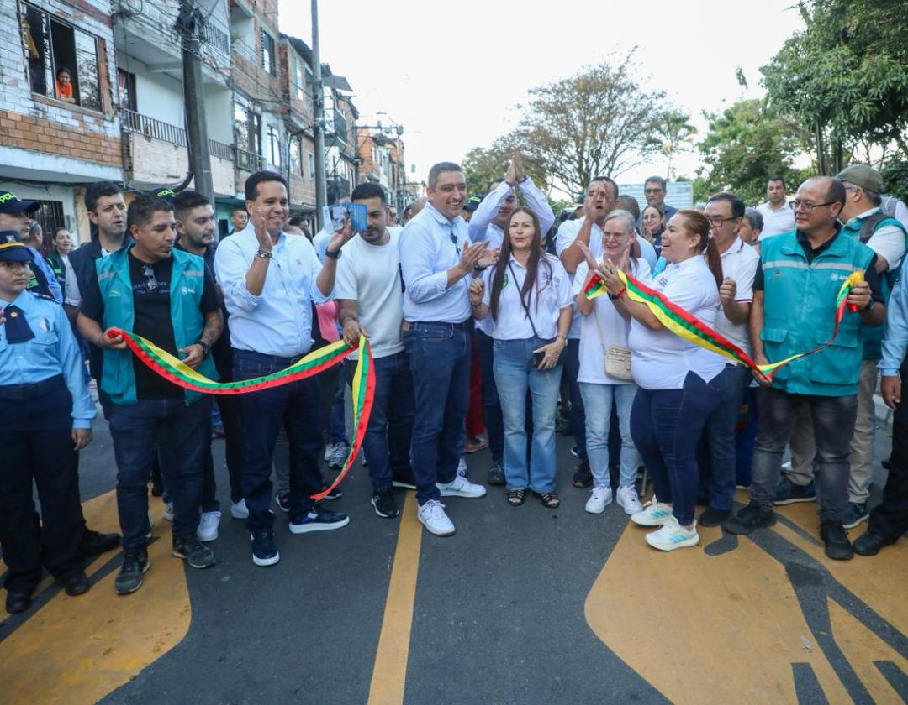
De Botadero Municipal a Transformación Urbana
🔄 Antes (Barro) vs. Después (2026)
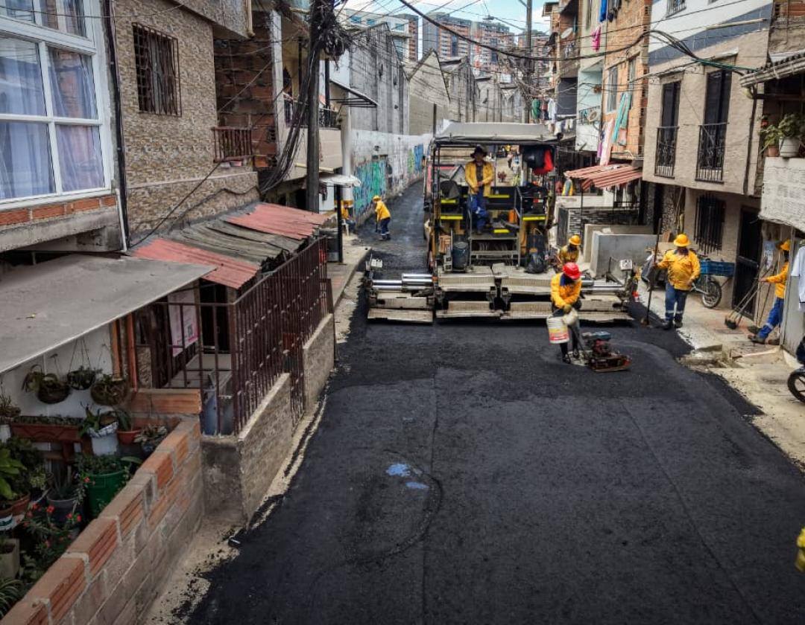
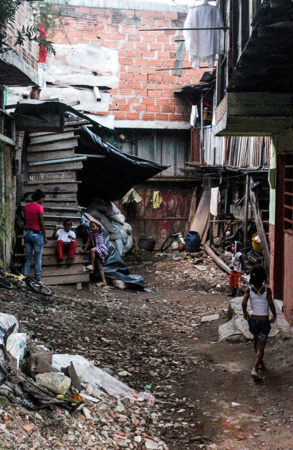
🎬 Crónica Audiovisual del Barrio
📜 5 Hitos Históricos
Familias de Titiribí y Heliconia se asientan sobre el antiguo basurero municipal.
Cierre del botadero y consolidación progresiva de viviendas.
Defensa ante obras del Metro: 67 familias reubicadas en El Limonar y el barrio resiste.
Sin pavimento ni redes formales: “polvo en verano y pantano en invierno” (alta IRA y EDA).
Alcantarillado EPM, andenes y vías conectadas a la Autopista Sur para ~4.000 hab.
La “Frontera Social” y la “Sociedad Archipiélago”
El contraste entre el enclave popular de La Santa Cruz y las zonas vecinas inmediatas con mejores condiciones de vida.
1. Sociedad Archipiélago
Benach (p. 43): Islas de privilegio inmobiliario junto a enclaves populares separados solo por una vía.
2. Pobreza Relativa
Wilkinson (p. 54): Ser pobre junto a una zona rica multiplica el estrés neuroendocrino.
3. Efecto de Barrio
Diez-Roux (p. 53): El entorno físico condiciona el riesgo cardiovascular, respiratorio y mental.
4. Injusticia Ambiental
Ecología Política: Riqueza empresarial privada vs. humo y ruido colectivizados hacia el barrio.
🏝️ El “Archipiélago Urbano”: La Santa Cruz vs. Zona Vecina
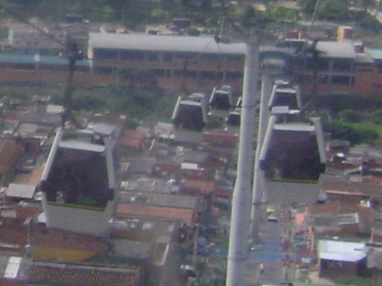
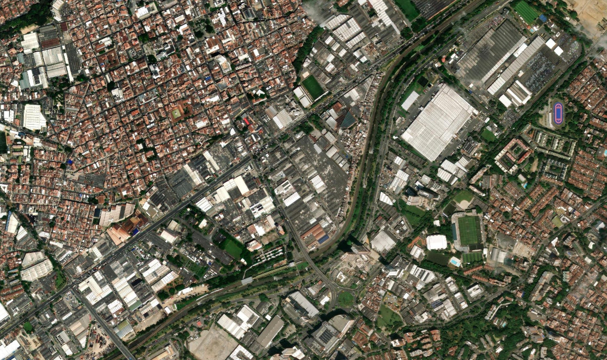
¿Cómo Opera la Frontera Social en la Salud Colectiva?
Comparación directa entre el barrio La Santa Cruz y su entorno inmediato de mayores ingresos.
| Dimensión | Enclave Popular: Barrio La Santa Cruz (Estratos 1–2) | Zona Cercana de Mejores Condiciones (Coltejer / Mayorca / Envigado - Estratos 4–6) | Traducción en Salud Pública (Mirada de Benach) |
|---|---|---|---|
| 1. Hábitat y Suelo | Autoconstrucción 1–3 pisos sobre antiguo relleno; < 2 m²/hab de zona verde. | Ciudadelas verticales cerradas con piscinas, gimnasios, vigilancia y parques. | Déficit de espacios recreativos y cardioprotectores para la niñez. |
| 2. Trabajo y Capital | Reciclaje, ventas callejeras, confección en casa y operarios tercerizados. | Grandes industrias, centros logísticos y vitrinas de hiperconsumo (Mayorca). | Mayor desgaste osteomuscular y menor remuneración (Virchow). |
| 3. Carga Ambiental | Casas a ras de vía recibiendo humo diésel PM2.5 y ruido >75 dB. | Apartamentos en altura con aislamiento acústico y mayor arborización. | Sobrecarga de EPOC, asma infantil, rinitis e insomnio. |
| 4. Atención Sanitaria | Régimen Subsidiado; cruzar la Autopista Sur hacia el Hospital del Sur. | Torres médicas privadas en Mayorca y medicina prepagada sin filas. | Ley Inversa de Atención (Tudor Hart): mayores barreras a quien más sufre. |
Vivienda, Materialidad y Riesgo Estructural
🏠 Diagnóstico Constructivo
- Materialidad: Ladrillo sin revoque, losas artesanales y cubiertas de zinc en 3° piso.
- Densidad (1 a 3 niveles): Crecimiento vertical familiar e inquilinatos sin norma NSR-10.
- Patologías intramuros:
• Humedad y salitre: Moho negro en primeros pisos sobre antiguo relleno.
• Fisuras: Vibración constante por tractomulas y trenes del Metro.
• Poca ventilación: Habitaciones internas oscuras que retienen alérgenos.
Vivienda 3 pisos sin refuerzo + suelo de relleno:
• Riesgo: Infiltración pluvial + vibración vial ➔ grietas y humedad.
• Salud: Asma bronquial, insomnio en lluvias y difícil acceso de ambulancias.
• Mitigación 2026: El nuevo alcantarillado frenó la infiltración al subsuelo.
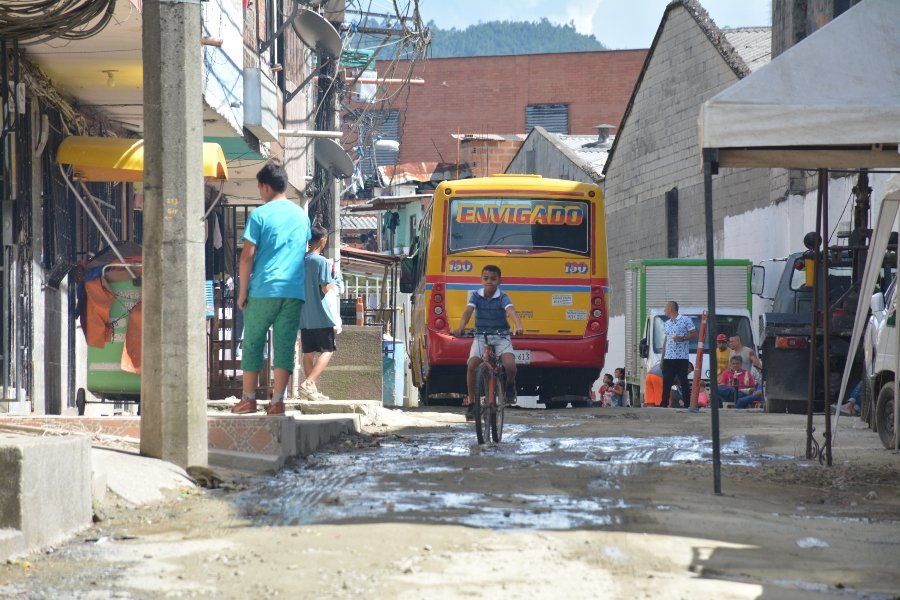
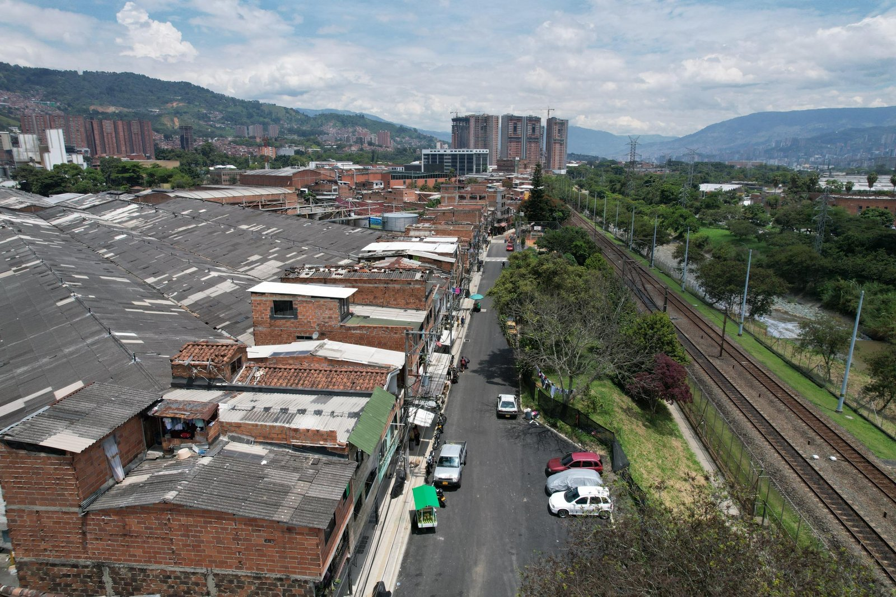
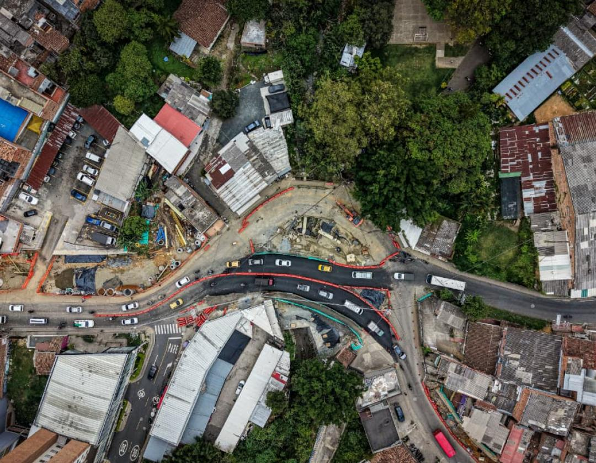
Institucionalidad, Espacio Público y Vocación
🏛️ Presencia Estatal
- Inversión 2025–2026: $3.510 millones en pavimento total, andenes y redes EPM tras 40 años de olvido.
- Salud extramural: Sin hospital interno; atención en E.S.E. Hospital del Sur cruzando la Autopista Sur.
- Salud Pública: Brigadas de vacunación, control de dengue y SISBÉN.
⛪ Redes y Espacio Público
- Junta de Acción Comunal (JAC): Motor político del barrio desde 1989.
- Cohesión espiritual: La Cruz Itagüí y Parroquia La Ermita de la Santa Cruz como soporte emocional.
- La calle como parque: Déficit de zonas verdes (< 2 m²/hab); la calle pavimentada es el salón comunitario.
🧭 Vocación del Lugar
- 1. Residencial Obrera: Hábitat trabajador junto al empleo industrial y el Metro.
- 2. Economía Vecinal: Tiendas, talleres, confección y reciclaje en primeros pisos.
- 3. Resistencia Comunitaria: Símbolo de lucha popular por la dignidad urbana.
Cras. 40 y 41 entre Autopista Sur y Línea A del Metro.
JAC, La Ermita de la Santa Cruz, tiendas de esquina y eje peatonal.
Parque infantil arborizado, punto APS barrial y cruce peatonal seguro.
Trabajo, Precariedad y Economía de la Calle
“Cuando no hay trabajo la vida se pudre; cuando el trabajo no tiene alma, la vida se asfixia” (Benach, p. 104).
⚙️ Estructura Ocupacional
- Informalidad (~60%): Sin contrato, ARL ni pensión; trabajar al día para comer al día.
- Recicladores de oficio: Herencia fundacional expuesta a sobreesfuerzo lumbar y sol.
- Economía callejera y doméstica:
• Ventas ambulantes: Fritos, tintos y comidas rápidas hacia la Autopista Sur.
• Vivienda productiva: Tiendas, talleres y confección a destajo (doble jornada femenina). - Formal precarizado: Operarios, vigilantes y aseadoras con contratos temporales (1 SMMLV).
📋 Casos Prácticos Resueltos
- 1. Unidad productiva: Subsistencia familiar en vivienda de uso mixto.
- 2. Seguridad Social: Ingreso < 1 SMMLV ➔ Régimen Subsidiado (SISBÉN IV), sin ARL ni pensión.
- 3. Riesgo en salud: Jornadas de 15 h/día, sedentarismo, estrés por “el fiado” y vejez desprotegida.
- 1. Exigencia física: Humo diésel ($PM_{2.5}$) + vapores de aceite + >8 h de pie (várices y lumbalgia).
- 2. Riesgo alimentario: Sin agua potable en acera, polvo vial y reutilización de aceites.
- 3. Acción salubrista: Módulos higiénicos con tanque de agua y apoyo a economía popular.
Riesgos Ambientales y Carga Física
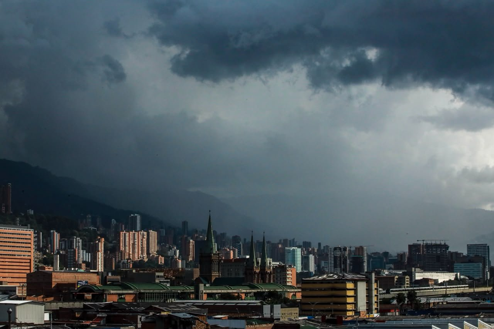
🫁 1. Aire ($PM_{2.5}$, $PM_{10}$ y $NO_x$)
Tráfico pesado + industrias + 40 años de polvo explican la alta carga de IRA en niños y EPOC / asma en adultos mayores.
🔊 2. Ruido Crónico (>75 dB)
Supera el límite OMS (55 dB) día y noche: fragmenta el sueño, eleva el cortisol y dispara la hipertensión y la ansiedad.
🦟 3. Vectores y Biomecánica
- Residuos y vectores: Acopio de reciclaje y puntos críticos favorecen roedores y el mosquito Aedes aegypti (Dengue).
- Carga física: Escaleras empinadas de autoconstrucción y puentes largos sobre la Autopista Sur desgastan articulaciones.
Demografía, Perfil Epidemiológico y Cultura Barrial
👥 Nativa vs. Usuaria
- Nativa (~3.500 hab.): Fundadores (años 70), generación obrera y juventud actual. Jefatura femenina ~42%.
- Usuaria / Flotante: Inquilinos atraídos por arriendos bajos cerca del Metro y obreros de bodegas.
Base $N = 2.500$: <15 años (550) + >65 años (300) / 15–64 años (1.650) = 51,5% (52 dependientes por cada 100 activos).
🏥 Perfil Epidemiológico
- Crónicas: Hipertensión, Diabetes tipo 2 y EPOC.
- Infecciosas: IRA, asma, EDA y Dengue.
- Laboral/Mental: Lumbalgia, várices, ansiedad y depresión.
- Mortalidad: 1° Circulatorias, 2° Tumores, 3° Respiratorias.
🍲 Alimentación e Identidad
- Saciedad económica: Dieta alta en harinas, fritos y azúcares por alto costo de proteínas y verduras.
- “El Fiado”: Crédito solidario a palabra en la tienda de esquina ante semanas sin ingreso.
- Identidad: Orgullo obrero, convite y resistencia comunal.
Comer saludable cuesta >65% de 1 SMMLV. Solución: Mercados populares y huertas.
Barrio–Ciudad–País y Finalidad de la Salud Pública
1️⃣ MODOS DE VIDA (País / Región)
Colombia y Antioquia: Informalidad (~56%), migración campo-ciudad, desigualdad (Gini >0,53) y fragmentación sanitaria (Ley 100).
2️⃣ CONDICIONES (Ciudad / Barrio)
Itagüí – Comuna 1: Suelo de antiguo botadero, frontera industrial/vial ($PM_{2.5}$) y conquista del pavimento en 2025–2026.
3️⃣ ESTILOS DE VIDA (Cotidiano)
Hogar e individuo: Consumo al día mediado por “el fiado”, jornadas extensas y redes vecinales protectoras (JAC).
🎯 Conclusión: ¿Para qué aprender a mirar la Salud Pública?
El proceso salud-enfermedad-cuidado colectivo determinado por la historia, el trabajo y el territorio.
“Diagnosticar y no actuar no es ético” (Benach): pavimentar, sanear y dignificar el trabajo popular.
Justicia social para una vida “autónoma, solidaria y gozosa”: defender la salud es defender la alegría.